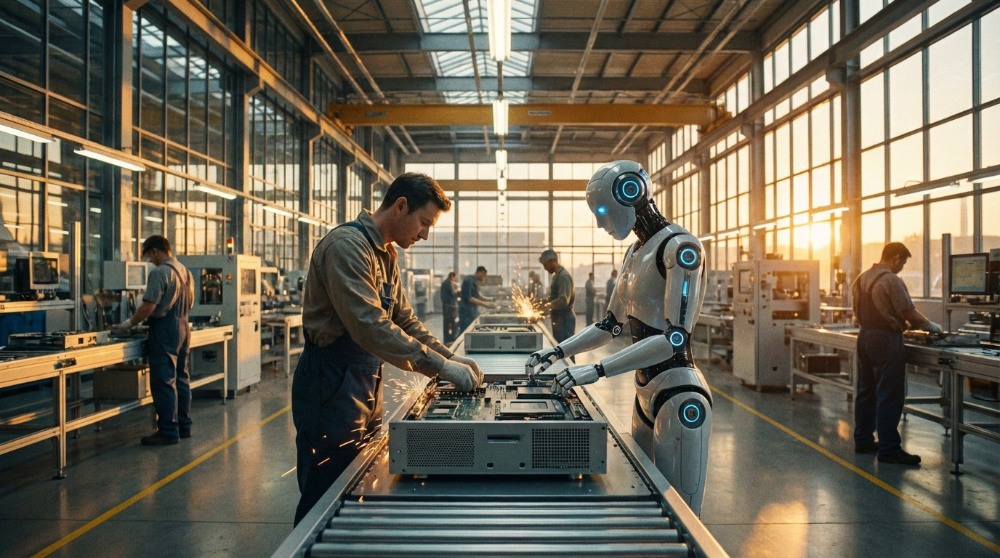

A Humanoid Robot Costs $16,000. A Human Costs $58,000 Per Year. Do the Math.
The economics of humanoid labor are crossing a threshold that will reshape manufacturing, logistics, and elder care within the decade.

The Unitree G1 humanoid robot retails for $16,000. It stands 127 cm tall, weighs 35 kg, walks at 2 m/s, has 23 degrees of freedom in its joints, and can fold laundry. Slowly. Imperfectly. But it can do it.
The median US worker earns $58,084 per year before benefits. Add employer-side payroll taxes, health insurance ($8,435/year average for single coverage), workers' comp, and PTO, and the fully loaded cost is closer to $75,000–$80,000. That worker needs sleep, bathroom breaks, sick days, and — critically — wants a raise next year.
A $16,000 robot running 20 hours per day, 360 days per year, with a 5-year useful life amortizes to roughly $2.20 per hour. Add $0.80/hour for electricity and maintenance. Total: $3.00/hour.
The US federal minimum wage is $7.25. The median hourly wage is $27.94. The robot undercuts both by a staggering margin.
The Roster
At least seven companies now have humanoid robots in active testing or limited production. The competitive landscape is moving faster than any consensus forecast predicted two years ago.
| Company | Robot | Price (Est.) | Height | DOF | Payload | Status |
|---|---|---|---|---|---|---|
| Unitree | G1 | $16,000 | 127 cm | 23 | 3 kg | Shipping |
| Unitree | H1 | $90,000 | 180 cm | 19 | — | Shipping |
| Tesla | Optimus Gen 2 | <$20,000 (target) | 173 cm | 28 | 20 kg | Internal testing |
| Figure | 02 | ~$50,000 (est.) | 167 cm | 16+ | 25 kg | BMW pilot |
| Boston Dynamics | Atlas (Electric) | Lease only | 150 cm | 28 | 25 kg | Hyundai pilot |
| Agility Robotics | Digit | ~$250,000 | 175 cm | 16 | 16 kg | Amazon pilot |
| 1X Technologies | NEO Beta | TBD | 177 cm | 30+ | — | Late prototype |
| Fourier Intelligence | GR-2 | ~$100,000 | 175 cm | 53 | 15 kg | Limited production |
The $3/Hour Employee
The economic case is straightforward enough to fit on a napkin. Let's compare a human warehouse associate to a near-future humanoid robot doing the same pick-and-place work:
| Factor | Human Worker | Humanoid Robot |
|---|---|---|
| Annual fully loaded cost | $75,000–$80,000 | $22,000–$26,000 |
| Effective $/hour | $36–$40 | $3.00–$3.60 |
| Hours per day | 8 (one shift) | 20 (w/ maintenance) |
| Days per year | ~250 | ~360 |
| Error rate (pick-place) | ~1 in 300 | ~1 in 200 (improving) |
| Training time | 2–4 weeks | Upload in hours |
| Attrition rate | ~150%/yr (warehousing) | 0% |
| Injury risk | 5.5 per 100 FTEs (BLS) | 0 (human injuries) |
The attrition number is the quiet killer. Amazon's US warehouse turnover rate has been reported at 150% annually — meaning the company replaces its entire warehouse workforce roughly every 8 months. Each replacement costs an estimated $5,000–$8,000 in hiring, onboarding, and lost productivity. A robot has a 0% quit rate.
Who's Actually Deploying
Foxconn operates over 100,000 industrial robots (not humanoids) across its facilities and has stated a goal of 30% automation in key production lines by 2027. The company is piloting both Figure and Agility humanoid units in its electronics assembly plants in Zhengzhou.
Amazon has been testing Agility's Digit robot at its Houston fulfillment center since late 2024. Digit's primary task: moving empty yellow totes from conveyor belts to storage shelves. It's one of the most boring, repetitive, ergonomically punishing tasks in the warehouse — and exactly the kind of job a humanoid can already do.
BMW is running Figure 02 robots at its Spartanburg, South Carolina plant. The robots are inserting sheet metal components into fixtures — a task that requires bipedal navigation on a factory floor designed for humans, dexterous manipulation, and visual quality inspection. Figure claims the robots complete the task cycle within 12% of human speed, which sounds terrible until you remember they don't take breaks.
"The question isn't whether humanoid robots will work in factories. It's whether they'll work well enough, fast enough, to justify the upfront investment before the next model makes them obsolete." — Melonee Wise, former CTO, Agility Robotics
The Goldman Forecast
Goldman Sachs estimates the humanoid robot market will reach $6 billion by 2030 and $38 billion by 2035, with the manufacturing and logistics sectors accounting for 60% of early adoption. Their base case assumes unit costs fall to $30,000–$50,000 for industrial-grade humanoids by 2028, with consumer-grade units approaching $15,000 by 2032.
The bull case — which Goldman assigns a 30% probability — envisions 1.4 million humanoid units deployed by 2035 and a $154 billion market. The bear case (20% probability) sees persistent dexterity limitations and safety certification delays restricting the market to $6 billion through 2035.
What's Still Missing
Dexterity. Current humanoid hands have 5–16 degrees of freedom per hand. A human hand has 27. Tasks requiring fine motor control — wiring a circuit board, suturing tissue, tying a knot — remain beyond current hardware. The gap is narrowing: Shadow Robot's Dexterous Hand has 24 DOF and can manipulate individual playing cards, but costs $120,000 per hand.
Battery life is the other constraint. The Unitree G1 runs for approximately 2 hours on a charge at moderate activity levels. Tesla's Optimus targets 6–8 hours. Industrial deployment at 20 hours/day requires hot-swappable battery packs or tethered operation — both solved problems, but added cost and complexity.
And then there's trust. A 35 kg robot moving at 2 m/s in a shared workspace with humans carries a kinetic energy of 70 joules per step. That's roughly equivalent to a baseball pitch. Safety certification for human-robot collaboration (ISO 10218, ISO/TS 15066) adds 6–18 months to any deployment timeline.
The Bottom Line
The $3/hour humanoid isn't a forecast — it's a product you can buy today from Unitree's website with a credit card. It won't replace your most skilled workers for years. But for the repetitive, ergonomically destructive tasks that already have 150% annual turnover? The economic argument ended when the price dropped below a used Honda Civic. The only question left is deployment speed — and whether the 120 million people worldwide working in manufacturing and logistics will adapt faster than the robots improve. History suggests they won't.
Sources & References
- Unitree G1 — product listing with full specs: 127cm height, 35kg weight, 23 DOF, ~2h battery, $16,000 base price (RobotShop)
- BLS Median Earnings Data — median annual earnings for full-time US workers; median hourly wage data by occupation (Fidelity / BLS, 2024)
- KFF 2024 Employer Health Benefits Survey — average employer-sponsored health insurance premiums: $8,951 for single coverage, $25,572 for family coverage in 2024
- Goldman Sachs Research — humanoid robot market forecast raised to $38 billion by 2035, 1.4 million unit shipments; base/bull/bear scenarios (Robot Central, Dec 2025)
- Amazon testing Agility Robotics' Digit at Houston fulfillment center alongside Sequoia system (DC Velocity, 2023)
- Amazon unveils Sequoia warehouse robotics and begins Digit testing (GeekWire, 2023)
- BMW Group, "Humanoid Robots for BMW Group Plant Spartanburg" — Figure 02 pilot deployment at SC assembly plant (BMW Group, 2024)
- Figure humanoid robots complete 11-month trial at BMW Spartanburg — 30,000+ X3 vehicles, 90,000 sheet-metal parts loaded (Assembly Magazine)
- Amazon warehouse turnover rate ~150% annually (2022 leaked documents); estimated $8B annual turnover cost (KPI Solutions, citing NYT reporting)
- Agility Robotics Digit — 175cm, 35 lb payload capacity, priced at approximately $250,000 (FutuRobots review)
- Shadow Robot Dexterous Hand — 20 actuated DOF, 24 joints, tendon-driven system replicating human hand kinematics (Wikipedia, citing Shadow Robot Co.)
- U.S. Bureau of Labor Statistics, "Employer-Reported Workplace Injuries and Illnesses" — 5.5 injuries per 100 full-time equivalent workers in warehousing (BLS, annual survey)
- ISO 10218-1:2011 and ISO/TS 15066:2016 — international safety standards for industrial robots and collaborative robot operations